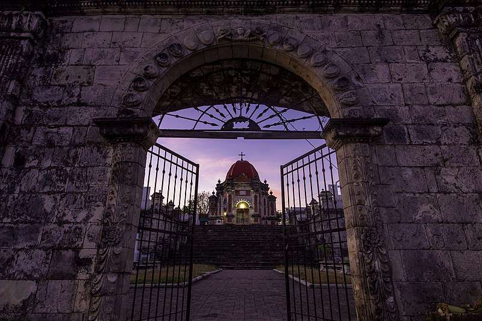

ILOILO TOURISM AND ATTRACTIONS

Miag-ao Church. A World Heritage Site. The Aztec-Baroque inspired church with Filipino botanicals used to carved on the façade. It is known for its intricate façade and pyramidal bell towers. The church was used as a fortress during the olden days. It is a massive structure built of yellowish Limestones.
San Joaquin Church. The militaristic church on the coast of San Joaquin overlooks the sea. Carved on a disproportionately large pediment on the façade is an intricate sculptural relief depicting the Spanish victory over Moroccan forces in the Battle of Tetuan. The church is one of the National Cultural Treasures in Iloilo by the National Museum of the Philippines, together with San Joaquin Campo Santo.